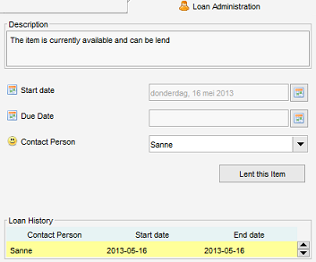

Lending Items
Right-click in item view > Select Loan Administration
Loans can be administered via the right-click menu on pressing "Loan Administration" or via the "Loan" tab of
the Item Form. A history of loans is maintained.

You can get an overview of your loans by using the Loan Administration
utility from the "Administration" menu. The contact person form also contains a separate tab showing his lend items.
If an item has been lent and is overdue (the contact person did not return the item before the due date)
a warning message is displayed on start up.
Persons
For the loan administration to work, you need to register contacts in the contacts module.
The registration of contacts works just the same as the registration of items in the other modules
Lending an item
Specify the person to whom the item will be lend and specify the date on which the loan starts.
If the loan start date is today (or in the past) the item will be marked as unavailable.
You can enter a due date to indicate when the person should return the item. If the person returns the item after this date
the item will be considered to be overdue.
The item cannot be lent to anyone else until the item has been returned. Note that there are 3 fields available
which tell you more about the loan status, "Available", "Loaned By" and "Days Loaned".
These can be added by through the General Field Settings.
Returning an item
Items borrowed by a person can be registered as "returned".
Press "Return Item". By default the item's return date is today. You can enter a different date in the "end date"
field before pressing the "Return Item" button.
Filtering
As stated before there are three fields available which tell something about the loan status of a specific item,
"Available", "Loaned By" and "Days Loaned". These fields can be used to create a Filter.
Note that the Loan Administration allows you to look at all loans, both current and historically.
Loan History
This overview shows the previous loans.